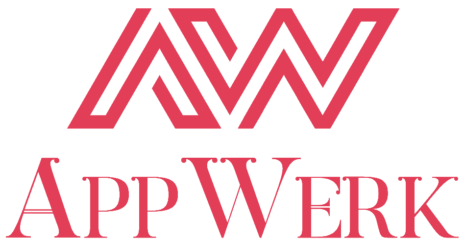
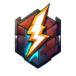

University of Pannonia Crest Pannon Egyetem címere
Used in the Education and Work sections.
A Tanulmányok és a Munkatapasztalat szekciókban használt címer.
Sources and attributions for third-party images, logos, and icons used on this website.
A weboldalon használt harmadik féltől származó képek, logók és ikonok forrásai és megjelölései.
Logos and crests used to represent educational institutions and organizations.
Oktatási intézmények és szervezetek megjelenítésére használt címerek és logók.
Used in the Education and Work sections.
A Tanulmányok és a Munkatapasztalat szekciókban használt címer.


Used in the Education section (modified).
A Tanulmányok szekcióban használt címer (módosított).

Used in the Work section (modified).
A Munkatapasztalat szekcióban használt logó (módosított).
Logos and icons representing open-source tools and projects.
Nyílt forráskódú eszközök és projektek megjelenítésére használt logók és ikonok.
Used in the Open Source Contributions section.
A Nyílt forráskódú hozzájárulások szekcióban használt ikon.

Used in the Open Source Contributions section.
A Nyílt forráskódú hozzájárulások szekcióban használt logó.
Used in the Open Source Contributions section.
A Nyílt forráskódú hozzájárulások szekcióban használt logó.
Vector icons provided by Font Awesome.
A Font Awesome által biztosított vektoros ikonok.
Used in the profile header under academic status.
A profil fejlécben a hallgatói státusznál használt ikon.
Used in the Competitions section for 1st place.
A Versenyeredmények szekcióban az 1. helyezésnél használt ikon.
Used in the Competitions section for 2nd place.
A Versenyeredmények szekcióban a 2. helyezésnél használt ikon.
Used in the Contact section for email.
A Kapcsolat szekcióban az e-mail megjelenítésére használt ikon.
Used in the Contact section for GitHub.
A Kapcsolat szekcióban a GitHub profil megjelenítésére használt ikon.
Used in the Contact section for LinkedIn.
A Kapcsolat szekcióban a LinkedIn profil megjelenítésére használt ikon.
Used in the Contact section for Facebook.
A Kapcsolat szekcióban a Facebook profil megjelenítésére használt ikon.
Used in the Contact section for X (formerly Twitter).
A Kapcsolat szekcióban az X (korábban Twitter) profil megjelenítésére használt ikon.
National flag SVG graphics sourced from Wikipedia / Wikimedia Commons.
A Wikipedia / Wikimedia Commons felületről származó nemzeti zászló SVG grafikák.
Used in the Languages section.
A Nyelvek szekcióban használt zászló.
All other media, including the personal profile photography, Minecraft avatar, and published research diagrams, are original works created by and property of Péter Tombor.
Minden egyéb média, beleértve a személyes profilképet, a Minecraft avatárt és a publikált kutatási ábrákat, Tombor Péter saját szellemi tulajdona és alkotása.